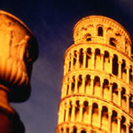

NOTICAS
23 - 27 Marzo
Información sobre oportunidades de negocios, alianzas estratégicas y joint ventures.
Asistencia permanente durante el seguimiento de sus negocios con empresas italianas.
Mediación en caso de controversias.
¿Qué ofrecemos?
Base de datos actualizada con más de 5,000 empresas italianas
Información y asesoría sobre el mercado inmobiliario italiano Confedilizia) Publicaciones (Noticiero Económico para Perú ( y Perú Informa para Italia)
Publicaciones (Noticiero Económico para Perú y Perú Informa para Italia)
SERVICIOS
Asesoría y consultoría legal
Servicio de traducción (ingles-italiano-español)
Organización de eventos económicos y comerciales
Trabajamos en estrecho contacto con:
Embajada de Italia en el Perú
I.C.E Perú : Instituto para el Comercio Exterior
ADEX : Asociación de Exportadores - Perú
Agencia de Promoción de la Inversión - Pro Inversión
Cámara de Comercio de Lima
PROMPERU Organismo de Promoción del Perú
Comisión para la Promoción de Exportaciones - PROMPEX
Sociedad Nacional de Industrias (SNI)
Formamos parte de varias redes:
ASOCIACIÓN DE CÁMARAS BINACIONALES DEL PERÚ (ACCB): Estamos asociados, conjuntamente a 9 Cámaras de otros países que trabajan en él Perú cuales: Alemania, Argentina, Canadá, España,Estados Unidos de Norteamérica, Francia, Gran Bretaña Japón, Suiza y México.
ASSOCAMERESTERO : Asociación de Cámaras de Comercio Italianas en el Exterior: 62 Cámaras Italianas en 38 países del mundo.
ASSOCAMERESTERO : Asociación de Cámaras de Comercio Italianas en el Exterior: 62 Cámaras Italianas en 38 países del mundo.
Cámara Nacional de Comercio, Producción y Servicios del Perú
Partenariato Área ACCA: Cámaras de Comercio Italianas en Colombia , Costa Rica, Santo Domingo y Venezuela
UNIONCAMERE : Unión de las Cámaras de Comercio, Industria,Artesanía y Agricultura de toda Italia.
Servicios Generales
Eventos de promoción comercial: Organización de ferias, show rooms y festivales internacionales.
Eventos de actualización y capacitación profesional: Seminarios y conferencias e implementación de cursos de italiano para nuestros socios.
Participación en eventos internacionales.
Sportello per l'internazionalizzazione Portal virtual para la integración de la demanda y oferta de la red de Cámaras de Comercio italianas en el mundo con información pública y reservada a cerca de mercados y ofertas, información económica, bancos de datos, servicios de búsquedas, consultas y todo lo que el usuario necesita para dirigir sus esfuerzos comerciales.
Asesoría Comercial: Promoción y seguimiento de negocios específicos durante todo el proceso de la transacción.
Asesoría legal:
Aspectos jurídicos de la actividad empresarial, interpretación de contratos, pagos, órdenes erradas, mercancía averiada, etc.
Eventos culturales:
Desfiles de modas, exhibiciones artísticas y conversatorios a cerca de temas de actualidad.
Ferias y Misiones Comerciales

Ferias: La Cámara de Comercio Italiana del Perú pone a su disposición información y brinda asesoría para la participación en ferias italianas, con el calendario anual de ferias clasificadas por sectores y catálogo de las más representativas.Misiones Comerciales: La Cámara de Comercio Italiana del Perú organiza visitas a Ferias y Empresas Italianas .
Joint Venture - Alianzas Estratégicas
El sistema más directo para contactarse con compradores, proveedores, inversionistas, socios estratégicos y en general, al mundo empresarial peruano e italiano.
Bases de datos con registros actualizados de empresas de todos los sectores
Contacto y asesoría con entidades de financiamientos para proyectos de inversión
Asesoría comercial para minimizar sus esfuerzos en la ampliación del mercado actual
Contamos con un Banco de datos que nos permite tener acceso a más de 5 millones de empresas italianas y un directorio empresarial del Perú, además del trabajo en estrecha colaboración con organismos de promoción públicos y privados para concretar negocios favorables, con atención personalizada.
Servicio: Confedilizia
Gracias a un acuerdo entre Assocamerestero (Asociación de las Cámaras de Comercio Italianas en el Exterior) y la Confedilizia (Confederación Italiana de la Propiedad Edilicia), un grupo de Cámaras Italianas en el Mundo, entre las cuales está la Cámara de Comercio Italiana del Perú, han activado el servicio de información y asesoría en materia de propiedad inmobiliaria en Italia, mediante el cual, cualquier persona interesada puede resolver sus dudas directamente por los expertos de la Confedilizia.


Tema central dirigido a la agroindustria, sector que en los últimos años ha experimentado un rápido crecimiento y generado fuertes expectativas.